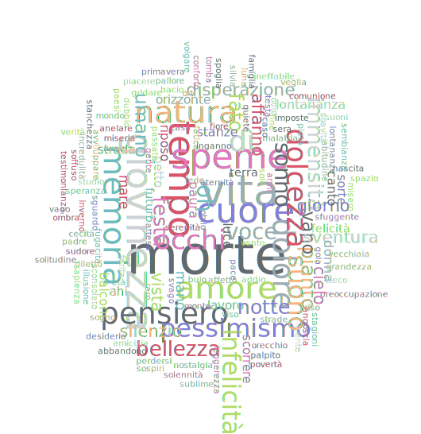

Le Tematiche

- immensità
- memoria
- nostalgia
- natura
- vista
- orizzonte
- spazio
- sublime
- silenzio
- quiete
- pensiero
- cuore
- paura
- vento
- voce
- eternità
- vita
- tempo
- morte
- perdersi
- dolcezza
- mare
- sera
- dì
- festa
- notte
- paesi
- orti
- luna
- lontananza
- serenità
- monte
- oh
- donna
- strada
- balconi
- raro
- soffuso
- luce
- tu
- sonno
- stanze
- preoccupazione
- illusione
- ferita
- cielo
- affanno
- speme
- pessimismo
- occhi
- pianto
- solennità
- svago
- riposo
- sogno
- bellezza
- fugacità
- speranza
- disperazione
- giovinezza
- ahi
- suoni
- solitudine
- canto
- gente
- povertà
- casa
- infelicità
- testimonianza
- volgare
- scorrere
- umano
- caso
- suono
- passato
- grandezza
- armi
- terra
- pace
- oblio
- attesa
- dolore
- veglia
- giorno
- imposte
- sole
- cecità
- ombra
- sembianza
- testa
- sospiri
- abbandono
- sorte
- avviluppare
- lei
- vano
- desiderio
- malattia
- sconsolato
- fato
- buio
- sapienza
- cieco
- amore
- sudore
- fine
- affetto
- spoglia
- incredulità
- odio
- vecchiaia
- futuro
- fiore
- età
- nascita
- comunione
- felicità
- riso
- pallore
- viso
- angoscia
- pietà
- dubbio
- stanchezza
- mente
- conforto
- sventura
- misero
- diletto
- mano
- soavità
- bacio
- palpito
- anelare
- petto
- gola
- sguardo
- addio
- miseria
- fede
- gridare
- inganno
- sfuggente
- tempo
- strade
- abitudine
- lavoro
- vago
- stagioni
- primavera
- studio
- leggerezza
- fatica
- padre
- famiglia
- orecchio
- lontananze
- ineffabile
- inverno
- sfuggente
- amicizia
- mondo
- piacere
- verità
- tomba